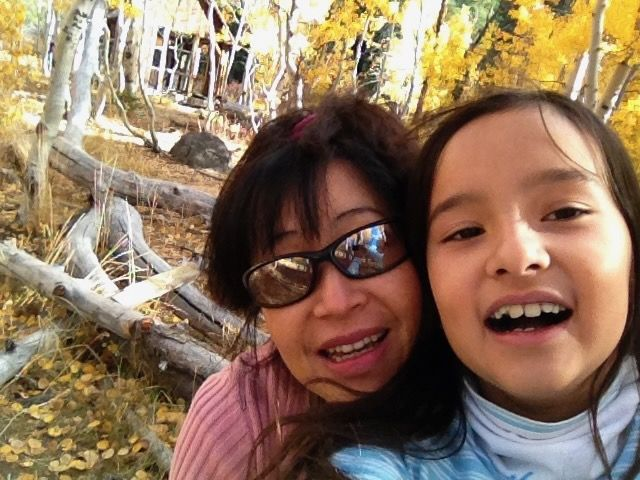
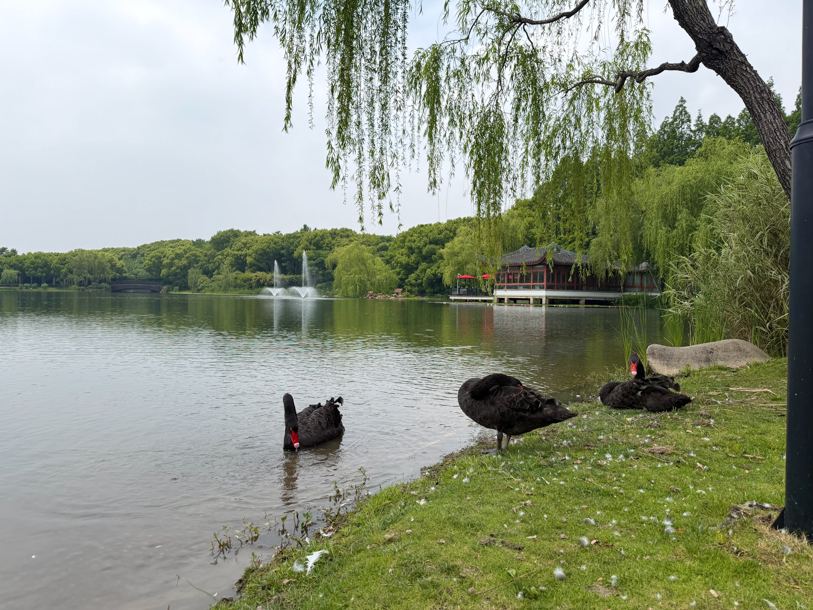

October 2026
Happy Birthday Mom
Dear Mom,
If “home is where Mom is,” then that must mean I have a home in every country. Beyond being my mom, you are also my inspiration. There’s not a year I look back on in my life where you and I were not going to some random country or attending some crazy event you got invited to “through a friend.” As I myself enter adulthood, I realize more and more each day not only how similar you and I are, but the immense gratitude I have for how you have raised me. I hope I become more like you when I’m older.
While most parents would hire a babysitter or leave their kids with a relative, for as long as I can remember, you’ve always just taken me with you. Even in rooms full of stuck-up corporate adults, you would shamelessly bring me alongside. While that was my normal growing up, I realize now that this was not the case for everyone. As a kid, there were times I remember crying in stubbornness over not wanting to attend the tech events you dragged me to. I thought, I just want to spend time with you not awkwardly stand next to you while you talk to tech bros. I often thought your friends were weird, and I couldn’t understand how you were SO open minded to doing random things. Unlike anyone else I knew, you were often TOO open minded. But now I see that your mentality of openness and excitement to experience the world is an invaluable trait I have to thank for so much of my own life’s experiences. I hope to be as open minded as you one day.
In wanting to wish you a Happy Birthday, I wanted to start by thanking you for the many travels we have gone on together and the many (unconventional) rooms you have put me in. As you should well know by now, you’ve sparked inside me this immense desire to go out and experience everything the world has to offer. But I’m grateful to say I’ve already experienced a lot of it thanks to you.
More than that, I want to thank you for not just being my mom, but for being my all time mentor, supporter, and motivation. Whenever I ask myself why I’m doing something, I realize that the answer that never fails to change is because of wanting to make you proud.
My goal in making this website is just to capture a few of the incredible moments we’ve shared together as a small token of my gratitude.
Love you to Oslo, to Chongqing, to the Moon, and to infinity and beyond.
Love,
Sky
let's go back…

the travels of
